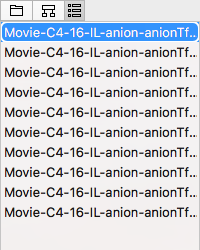

The third tab of the navigators is the "frames-navigator". The frames-navigator is a list of "frames" that can viewed as frames of a movie. Any properties set in the detail-panes are for the selected frames only.

Figure: The frame-navigator lists the frames of a movie.